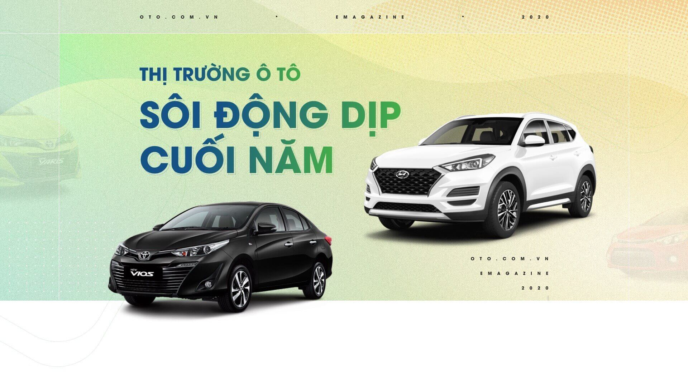
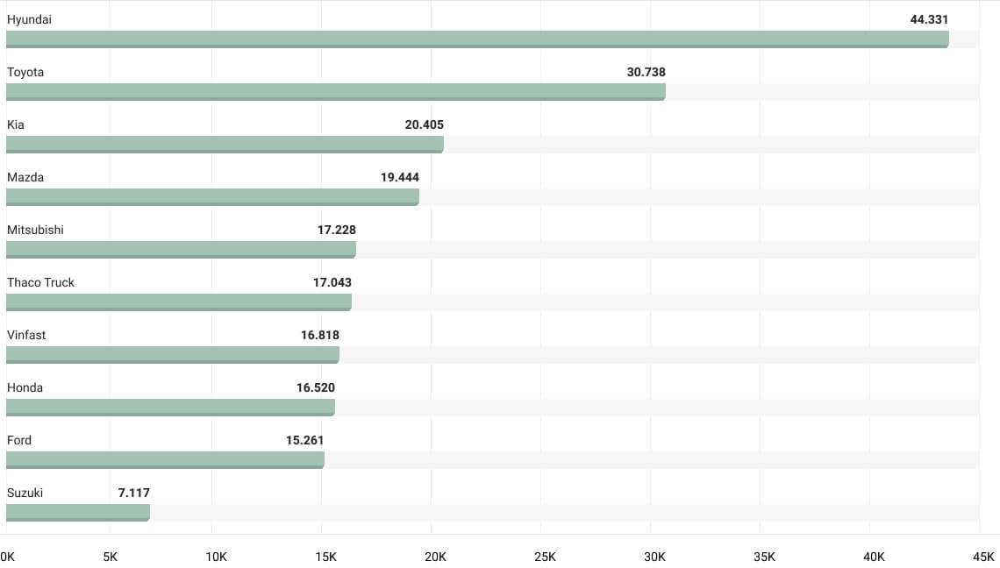
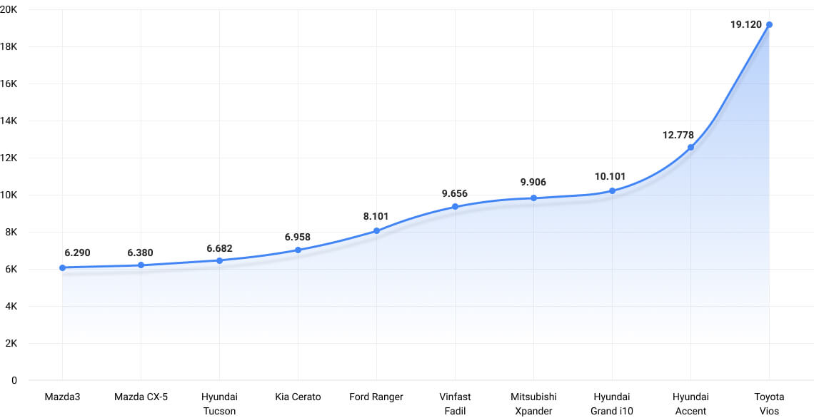
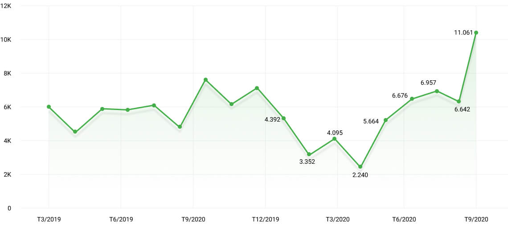

Tháng 9 - Bước đà cho sự bùng nổ cuối năm
Sau khi suy giảm gần 20% dưới ảnh hưởng của làn sóng covid-19 thứ 2 và tháng Ngâu, thị trường ô tô tháng 9 đã tăng trưởng mạnh mẽ trở lại và hứa hẹn sự bứt phá thần tốc trong Quý IV.
Tháng 9 đánh dấu sự chuyển mình của thị trường ô tô khi doanh số bán xe mới của các hãng chứng kiến mức tăng trưởng cao nhất kể từ đầu năm. Nổi bật là Vinfast tăng 142%, Hyundai tăng 53%, Toyota và Suzuki cũng tăng trên 45% so với tháng 8. Sự tăng trưởng còn được thấy rõ ngay ở phân khúc xe tải với Thaco và Suzuki cùng tăng 16%. Tính chung cả số liệu của VAMA, TC Motor và Vinfast, thị trường xe mới tháng 9 tăng trưởng kỷ lục ở mức 42% so với tháng 8 và tăng 15% so với tháng 7.
Hyundai vẫn tiếp tục giữ ngôi đầu về doanh số bán, Toyota Vios là mẫu xe bán chạy nhất trong 9 tháng đầu năm.
Top 10 hãng xe bán chạy nhất 9 tháng đầu năm 2020

Nguồn: VAMA, TC Motor, Vinfast. Ghi chú: Vinfast không công bố số liệu bán hàng tháng 4/2020
Top 10 mẫu xe bán chạy nhất 9 tháng đầu năm 2020

Nguồn: VAMA, TC Motor, Vinfast. Ghi chú: Vinfast không công bố số liệu bán hàng tháng 4/2020
Theo quan sát của Oto.com.vn, các mẫu xe tiêu thụ tốt nhất hiện nay cũng là những mẫu được người dùng tìm kiếm thông tin nhiều nhất trên site. Tuy nhiên, điểm đáng lưu ý là mặc dù Toyota Vios vẫn giữ ngôi đầu về doanh số bán, song dường như sức hút của mẫu xe này đang có dấu hiệu giảm. Khi xu hướng người mua xe tại Việt Nam ngày càng trẻ hóa với tỷ trọng trên 42% là người trong độ tuổi từ 25-34 tuổi, các mẫu xe của Hyundai như Accent, SantaFe hay như mẫu xe Mazda 3 với thiết kế năng động trẻ trung đang ngày càng thu hút được đông đảo nhóm khách hàng tiềm năng này.
Các mẫu xe mới được quan tâm nhiều nhất trong 9 tháng đầu năm
Sức hút của xe cũ đã tăng trở lại sau tháng Ngâu
Khảo sát trên 50.000 tin rao bán xe trên Oto.com.vn đã phần nào phản ánh nguồn cung trên thị trường giao dịch xe cũ.
Hiện tại xe cũ được giao dịch nhiều nhất trên thị trường chủ yếu có tuổi đời không quá 6 năm, chiếm tới 70% lượng xe được rao bán. Số lượng tin rao bán xe cũ tháng 9 giảm 28%, giá xe cũ đã giảm đáng kể tại một số phân khúc do người dùng chuyển hướng quan tâm nhiều hơn cho xe mới. Cụ thể, so với đầu năm 2020, ở phân khúc sedan mức giảm mạnh nhất 110 triệu đồng được ghi nhận với mẫu xe Kia Optima đời 2016. Dòng xe sang Toyota Land Cruiser 2016 được giao dịch ở mức giá trung bình 3 tỷ 250 triệu đồng, giảm tới 100 triệu đồng so với tháng Một. Ngược lại, phân khúc xe bán tải và xe tải sản xuất từ 2017 trở lại đây tăng giá nhẹ, điển hình như Ford Ranger 2017 tăng 31 triệu đồng.
Biến động giá xe cũ bình quân từng phân khúc
Bên cạnh đó, dựa trên số lượt tìm mua xe trên website Oto.com.vn cho thấy mức độ quan tâm dành cho xe cũ thuộc tất cả các phân khúc trong Quý III giảm, chỉ bằng 11% so với Quý II. Đặc biệt, mẫu sedan giảm mạnh nhất với 15%, xe tải cũ giảm nhẹ 5%. Việc giảm sức hút này một phần do tác động từ nghị định 70/2020/NĐ-CP về việc giảm 50% lệ phí trước bạ cho xe mới lắp ráp trong nước, mặt khác đây là thời điểm chuẩn bị bước vào tháng Ngâu âm lịch.
Tuy nhiên, sang tháng 9 khi các điều kiện kinh tế xã hội đã ổn định, đồng thời bắt đầu vào giai đoạn cuối năm nên số lượt tìm xe đã tăng trở lại. Xu hướng này được dự báo sẽ tiếp tục tăng trong những tháng tới khi thị trường ô tô bước vào mùa sôi động nhất trong năm. Đây là tín hiệu lạc quan cho các đại lý xe cũ tích cực xây dựng chiến lược bán hàng phù hợp để đẩy mạnh doanh số cuối năm.
Lượt tìm kiếm xe cũ
SUV và Hatchback sẽ là 2 phân khúc sôi động nhất dịp cuối năm
Những tháng cuối năm luôn được coi là mùa mua sắm tại Việt Nam. Trong đó tháng 10 là thời điểm tốt nhất để mua xe khi có nhiều khuyến mại từ đại lý, nguồn cung xe dồi dào, người dùng có nhiều lựa chọn về phiên bản, màu sắc cũng như tránh được việc mua xe kiểu “bia kèm lạc”. Doanh số xe mới tháng 10 được dự báo sẽ tiếp đà tăng trưởng, tuy nhiên sẽ khó đạt được mức tăng 42% của tháng 9 do lượng tiêu thụ đã đạt mức cao.
Phân khúc SUV sẽ có sự tăng trưởng mạnh mẽ thời gian tới. Trong tháng 9, phân khúc này đã chứng kiến màn ra mắt đầy ấn tượng của Kia Seltos với doanh số 1.250 xe. Con số này bằng với lượng tiêu thụ cộng dồn trong 9 tháng của Honda HR-V và chỉ kém Ford Ecosport 540 xe. Với sự góp mặt của Kia Seltos, doanh số bán xe tháng 9 của dòng SUV đạt 11.061 xe, tăng 66% so với tháng 8. Nhu cầu mua xe gia đình phục vụ đi lại dịp Tết tăng cao sẽ tiếp đà tăng trưởng cho các mẫu xe SUV, đặc biệt là các mẫu SUV hạng B như Hyundai Kona, Kia Seltos do mức giá thấp hơn SUV hạng C và kích thước đủ lớn cho mục đích di chuyển của gia đình.
Doanh số bán xe mới thuộc dòng SUV

Nguồn: VAMA, TC Motor, Vinfast
Tháng 10 cũng là thời điểm tăng tốc cho các mẫu xe đô thị cỡ nhỏ, đặc biệt là cơ hội lớn dành dòng xe thương hiệu Việt - VinFast Fadil vươn lên dẫn đầu phân khúc xe hatchback hạng A. Theo số liệu của Cục đăng kiểm, trong Quý I 2020, lượng xe tiêu thụ của VinFast Fadil đạt 3.195 xe. Trừ tháng 4 không công bố số liệu, cộng dồn doanh số bán xe của VinFast Fadil trong 9 tháng đã đạt 9.656 xe, thu hẹp khoảng cách với vị trí số 1 hiện tại của phân khúc là Hyundai i10. Với sự ủng hộ của người tiêu dùng dành cho thương hiệu xe Việt cộng với chiến lược bán hàng phù hợp, mẫu xe ăn khách này của VinFast có nhiều tiềm năng giữ ngôi đầu trong phân khúc năm 2020.
Doanh số bán xe của các mẫu xe hatchback hạng A
- Biên tậpAnh Huy
- Thiết kếAnh Huy
Theo Phòng nghiên cứu thị trường
16/10/2020